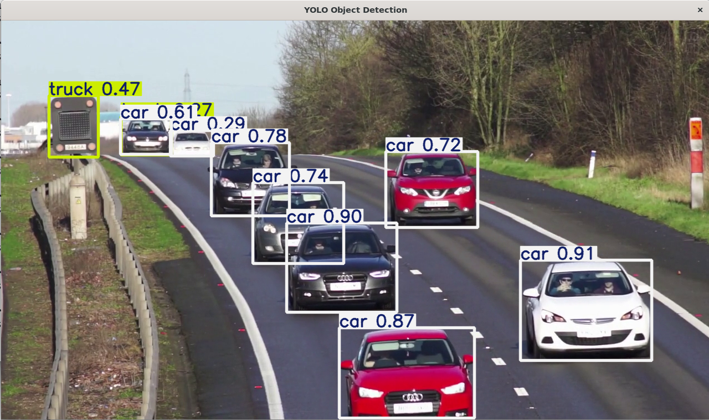
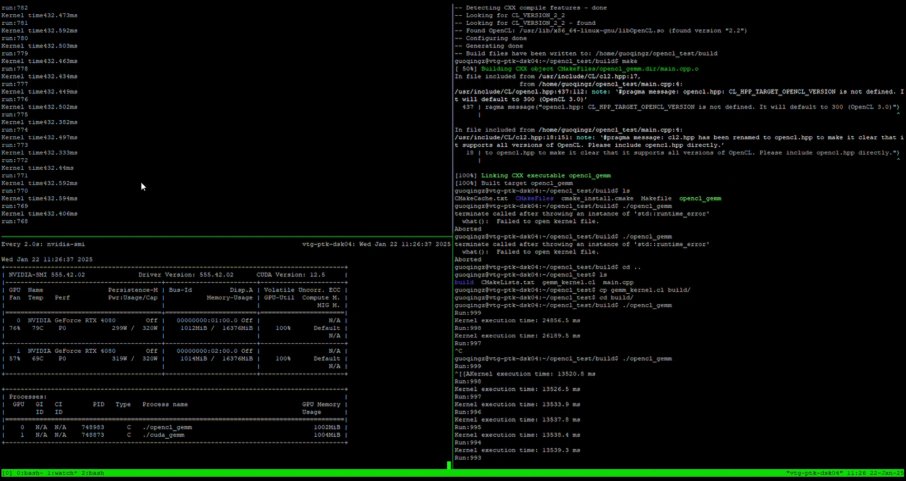

About Me
I am an ML CV Engineer @ Intel. I am interested in deep learning, model quantization, and hardware-accelerated model inference.
Here is a summarized list of my technical skills:
- Programming Languages: Python, C++11/14/17, Matlab
- Machine Learning: Pytorch, Scikit-learn, Lightening AI, model quantization, performance analysis, hardware-acceleration LLM inference, vLLM
- Computer Vision: OpenCV, VSLAM, 3D geometry, 3D reconstruction, Scipy
- Robotics: ROS2, Sensor fusion, localization
- Mathematics: Linear algebra, vector calculus, nonlinear optimization, Probability theory
- Other Tools/Technologies: Docker, Git, GitHub
Patents
- US10051670 Human proximity detection techniques for wireless communication devices
- 20220175131 METHODS AND APPARATUS TO ANALYZE DESK HEIGHTS
- 20220114786 ENHANCED FULL-BODY RECONSTRUCTION USING A SINGLE CAMERA
My Projects

Run quantized LLaMA on Intel CPU

Image guided depth completion
